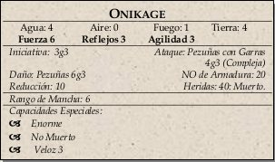

|  | Seis onikage, caballos demoníacos con trozos de carne verde purpúrea sobre sus cuerpos esqueléticos, con garras,
morros similares a los de los cocodrilos, y melenas y colas tentaculares. Cuando se enfadan, las cuencas de sus ojos
despiden un brillo verdoso. Una vez que detectan el olor de los humanos, se acercarán al campamento, atacando a
cualquiera que esté tumbado o a los caballos aislados y llevándoselos consigo. |